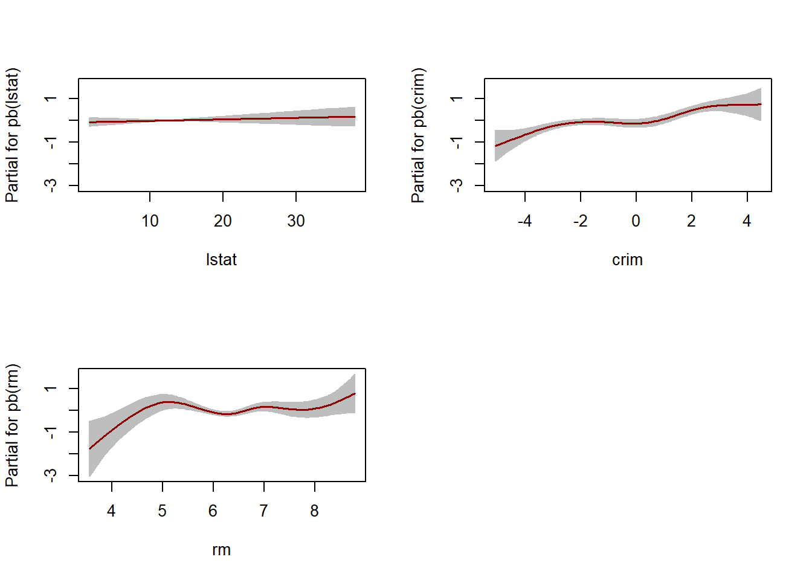

require(gamlss)
require(MASS)
require(gamlss.add)
require(ISLR)
require(car)
data("mcycle")
head("mcycle")## [1] "mcycle"## GAMLSS-RS iteration 1: Global Deviance = 1395.722
## GAMLSS-RS iteration 2: Global Deviance = 1395.722## GAMLSS-RS iteration 1: Global Deviance = 1387.315
## GAMLSS-RS iteration 2: Global Deviance = 1387.315## GAMLSS-RS iteration 1: Global Deviance = 1308.537
## GAMLSS-RS iteration 2: Global Deviance = 1308.537## GAMLSS-RS iteration 1: Global Deviance = 1206.351
## GAMLSS-RS iteration 2: Global Deviance = 1206.351par(cex = 1.2, las = 1)
plot(accel ~ times, data = mcycle, col = 'blue', ylab = 'Aceleração',
xlab = 'Tempo após o impacto (ms)', main = 'Polinômios')
# ordem 2
lines(sort(mcycle$times), fitted(ajuste1p)[order(mcycle$times)], col = 'black', lwd = 2)
# ordem 2
lines(sort(mcycle$times), fitted(ajuste2p)[order(mcycle$times)], col = 'red', lwd = 2)
# ordem 3
lines(sort(mcycle$times), fitted(ajuste3p)[order(mcycle$times)], col = 'blue', lwd = 2)
# ordem 10
lines(sort(mcycle$times), fitted(ajuste4p)[order(mcycle$times)], col = 'green', lwd = 2)
legend(x = "bottomright", lty = 1, lwd = 2, col = c('black', 'red', 'blue', 'green'),
legend = c('Ordem 1', 'Ordem 2', 'Ordem 5', 'Ordem 10'))## df AIC
## ajuste4p 12 1230.351
## ajuste3p 7 1322.537
## ajuste2p 4 1395.315
## ajuste1p 3 1401.722## df AIC
## ajuste4p 12 1265.035
## ajuste3p 7 1342.770
## ajuste2p 4 1406.877
## ajuste1p 3 1410.393Em ambos os casos o polinômio de maior ordem produz menores valores. No entanto, fica evidente que o polinômio de grau 10 é demasiadamente complexo para ajustar os dados, apresentando várias oscilações que não refletem a relação entre as variáveis.
## GAMLSS-RS iteration 1: Global Deviance = 1391.019
## GAMLSS-RS iteration 2: Global Deviance = 1391.019## [1] 2O único termo inserido no modelo é x^2.
## GAMLSS-RS iteration 1: Global Deviance = 1376.56
## GAMLSS-RS iteration 2: Global Deviance = 1376.56## [1] 0.5 0.5Os termos inseridos no modelo são \(x^{0.5} \text{ e } x^{0.5}*log(x).\)$
## GAMLSS-RS iteration 1: Global Deviance = 1351.969
## GAMLSS-RS iteration 2: Global Deviance = 1351.969## [1] 2 2 2Os termos inseridos no modelo são \(x^2\) e \(x^2*log(x)\) e \(x^2*(log(x))^2.\)
plot(accel ~ times, data = mcycle, col = 'blue', ylab = 'Aceleração',
xlab = 'Tempo após o impacto (ms)', main = 'Polinômios fracionários')
# ordem 1
lines(sort(mcycle$times), fitted(ajuste1fp)[order(mcycle$times)], col = 'black', lwd = 2)
# ordem 2
lines(sort(mcycle$times), fitted(ajuste2fp)[order(mcycle$times)], col = 'red', lwd = 2)
# ordem 3
lines(sort(mcycle$times), fitted(ajuste3fp)[order(mcycle$times)], col = 'blue', lwd = 2)
legend(x = "bottomright", lty = 1, lwd = 2, col = c('black', 'red', 'blue'),
legend = c('Ordem 1', 'Ordem 2', 'Ordem 3'))## df AIC
## ajuste3fp 8 1367.969
## ajuste2fp 6 1388.560
## ajuste1fp 4 1399.019Novamente o modelo com maior número de parâmetros produziu menor AIC, mas o ajuste é claramente insatisfatório.
## GAMLSS-RS iteration 1: Global Deviance = 1354.634
## GAMLSS-RS iteration 2: Global Deviance = 1354.634## numeric(0)Os três graus de liberdade, neste caso, estão associados aos termos linear, quadrático e cúbico globais. Não há graus de liberdade para parâmetros adicionais, referentes a ajustes locais (entre nós).
## (Intercept) bs(times, df = 3)1 bs(times, df = 3)2 bs(times, df = 3)3
## 1 1 0.00000000 0.000000e+00 0.000000e+00
## 2 1 0.01079094 3.923979e-05 4.756338e-08
## 3 1 0.04222715 6.209876e-04 3.044057e-06
## 4 1 0.06241267 1.386948e-03 1.027369e-05
## 5 1 0.08198862 2.447422e-03 2.435245e-05
## 6 1 0.17906630 1.323836e-02 3.262373e-04
## 7 1 0.19484697 1.604622e-02 4.404845e-04
## 8 1 0.20252756 1.754176e-02 5.064549e-04
## 9 1 0.23886717 2.590126e-02 9.361901e-04
## 10 1 0.25245613 2.964060e-02 1.160023e-03## GAMLSS-RS iteration 1: Global Deviance = 1351.591
## GAMLSS-RS iteration 2: Global Deviance = 1351.591## 50%
## 23.4Com quatro graus de liberdade temos um parâmetro adicional no modelo que permite a divisão do intervalo de x em dois. Observe que, por default, a mediana de x é usada como coordenada do único nó.
Na sequência, para cada grau de liberdade adicional temos um nó e um subintervalo a mais no modelo.
## GAMLSS-RS iteration 1: Global Deviance = 1298.061
## GAMLSS-RS iteration 2: Global Deviance = 1298.061## 33.33333% 66.66667%
## 16.8 28.6## GAMLSS-RS iteration 1: Global Deviance = 1298.061
## GAMLSS-RS iteration 2: Global Deviance = 1298.061## GAMLSS-RS iteration 1: Global Deviance = 1286.605
## GAMLSS-RS iteration 2: Global Deviance = 1286.605## 25% 50% 75%
## 15.6 23.4 34.8## GAMLSS-RS iteration 1: Global Deviance = 1215.093
## GAMLSS-RS iteration 2: Global Deviance = 1215.093## 20% 40% 60% 80%
## 14.68 18.44 26.52 36.20## GAMLSS-RS iteration 1: Global Deviance = 1201.596
## GAMLSS-RS iteration 2: Global Deviance = 1201.596## 16.66667% 33.33333% 50% 66.66667% 83.33333%
## 14.6 16.8 23.4 28.6 39.4## GAMLSS-RS iteration 1: Global Deviance = 1207.46
## GAMLSS-RS iteration 2: Global Deviance = 1207.46## 14.28571% 28.57143% 42.85714% 57.14286% 71.42857% 85.71429%
## 13.54286 16.14286 19.40000 25.77143 32.22857 41.60000## GAMLSS-RS iteration 1: Global Deviance = 1196.268
## GAMLSS-RS iteration 2: Global Deviance = 1196.268## 12.5% 25% 37.5% 50% 62.5% 75% 87.5%
## 11.2 15.6 17.6 23.4 27.2 34.8 42.6## GAMLSS-RS iteration 1: Global Deviance = 1192.125
## GAMLSS-RS iteration 2: Global Deviance = 1192.125## 10% 20% 30% 40% 50% 60% 70% 80% 90%
## 10.04 14.68 16.20 18.44 23.40 26.52 31.52 36.20 43.80## GAMLSS-RS iteration 1: Global Deviance = 1192.325
## GAMLSS-RS iteration 2: Global Deviance = 1192.325## 7.692308% 15.38462% 23.07692% 30.76923% 38.46154% 46.15385% 53.84615% 61.53846%
## 8.80000 14.04615 15.40000 16.32308 17.75385 21.13846 25.00000 27.20000
## 69.23077% 76.92308% 84.61538% 92.30769%
## 31.07692 35.30769 40.27692 46.35385Vamos comparar os modelos usando GAIC com diferentes constantes de penalização.
GAIC(ajuste1rs, ajuste2rs, ajuste3rs, ajuste4rs,
ajuste5rs, ajuste6rs, ajuste7rs, ajuste8rs,
ajuste9rs, ajuste10rs, k = 2)## df AIC
## ajuste9rs 14 1220.125
## ajuste8rs 12 1220.268
## ajuste6rs 10 1221.596
## ajuste10rs 17 1226.325
## ajuste7rs 11 1229.460
## ajuste5rs 9 1233.093
## ajuste4rs 8 1302.606
## ajuste3rs 7 1312.061
## ajuste2rs 6 1363.591
## ajuste1rs 5 1364.634O ajuste com doze nós internos é selecionado.
GAIC(ajuste1rs, ajuste2rs, ajuste3rs, ajuste4rs,
ajuste5rs, ajuste6rs, ajuste7rs, ajuste8rs,
ajuste9rs, ajuste10rs, k = 3.84)## df AIC
## ajuste6rs 10 1239.996
## ajuste8rs 12 1242.348
## ajuste9rs 14 1245.885
## ajuste5rs 9 1249.653
## ajuste7rs 11 1249.700
## ajuste10rs 17 1257.605
## ajuste4rs 8 1317.326
## ajuste3rs 7 1324.941
## ajuste1rs 5 1373.834
## ajuste2rs 6 1374.631O ajuste com quatro nós internos é selecionado.
GAIC(ajuste1rs, ajuste2rs, ajuste3rs, ajuste4rs,
ajuste5rs, ajuste6rs, ajuste7rs, ajuste8rs,
ajuste9rs, ajuste10rs, k = log(nrow(mcycle)))## df AIC
## ajuste6rs 10 1250.500
## ajuste8rs 12 1254.953
## ajuste5rs 9 1259.107
## ajuste9rs 14 1260.590
## ajuste7rs 11 1261.254
## ajuste10rs 17 1275.461
## ajuste4rs 8 1325.728
## ajuste3rs 7 1332.294
## ajuste1rs 5 1379.085
## ajuste2rs 6 1380.933O ajuste com quatro nós internos é selecionado.
plot(accel ~ times, data = mcycle, col = 'blue', ylab = 'Aceleração',
xlab = 'Tempo após o impacto (ms)', main = 'Regressão por splines')
lines(sort(mcycle$times), fitted(ajuste1rs)[order(mcycle$times)], col = 'black', lwd = 2)
lines(sort(mcycle$times), fitted(ajuste4rs)[order(mcycle$times)], col = 'red', lwd = 2)
lines(sort(mcycle$times), fitted(ajuste6rs)[order(mcycle$times)], col = 'blue', lwd = 2)
lines(sort(mcycle$times), fitted(ajuste10rs)[order(mcycle$times)], col = 'green', lwd = 2)
legend(x = "bottomright", lty = 1, lwd = 2, col = c('black', 'red', 'blue', 'green'),
legend = c('df = 3; K = 0', 'df = 5; K = 2', 'df = 8; K = 5', 'df = 15; K = 12'))Observe que o modelo selecionado via AIC é diferente do escolhido usando as demais constantes de penalização. A penalização a ser utilizada é uma questão em aberto, de forma que AIC, em algumas aplicações, pode ser muito permissivo, conduzindo a modelos com elevado número de parâmetros, enquanto BIC pode ser muito conservador, conduzindo à seleção de modelos com falta de ajuste. Valores intermediários para a constante de penalização (como k=3 ou k=4) podem ser considerados.
Como alternativa ao modelo de regressão por splines selecionado via AIC na passagem anterior, vamos ajustar o correspondente modelo usando splines naturais.
plot(accel ~ times, data = mcycle, col = 'blue', ylab = 'Aceleração',
xlab = 'Tempo após o impacto (ms)', main = 'Natural splines vs cubic splines')
ajuste0rs <- gamlss(accel ~ bs(times, df = 10), data = mcycle)## GAMLSS-RS iteration 1: Global Deviance = 1196.268
## GAMLSS-RS iteration 2: Global Deviance = 1196.268## 12.5% 25% 37.5% 50% 62.5% 75% 87.5%
## 11.2 15.6 17.6 23.4 27.2 34.8 42.6## GAMLSS-RS iteration 1: Global Deviance = 1196.53
## GAMLSS-RS iteration 2: Global Deviance = 1196.53## 12.5% 25% 37.5% 50% 62.5% 75% 87.5%
## 11.2 15.6 17.6 23.4 27.2 34.8 42.6lines(sort(mcycle$times), fitted(ajuste0rs)[order(mcycle$times)], col = 'black', lwd = 2)
lines(sort(mcycle$times), fitted(ajuste0nrs)[order(mcycle$times)], col = 'red', lwd = 2)
legend(x = "bottomright", lty = 1, lwd = 2, col = c('black', 'red'),
legend = c('Cubic spline', 'Natural cubic spline'))Nesta aplicação de modelos com nós livres vamos considerar apenas splines lineares.
## GAMLSS-RS iteration 1: Global Deviance = 1350.552
## GAMLSS-RS iteration 2: Global Deviance = 1350.552##
## Call: fitFreeKnots(y = y, x = xvar, weights = w, degree = degree,
## knots = lambda, fixed = control$fixed, base = control$base)
##
## Coefficients:
## (Intercept) x XatBP1
## 64.789 -5.397 8.380
## Estimated Knots:
## BP1
## 19.2## GAMLSS-RS iteration 1: Global Deviance = 1254.327
## GAMLSS-RS iteration 2: Global Deviance = 1254.327##
## Call: fitFreeKnots(y = y, x = xvar, weights = w, degree = degree,
## knots = lambda, fixed = control$fixed, base = control$base)
##
## Coefficients:
## (Intercept) x XatBP1 XatBP2
## 82.219 -7.062 31.978 -26.329
## Estimated Knots:
## BP1 BP2
## 23.40 28.89## GAMLSS-RS iteration 1: Global Deviance = 1206.337
## GAMLSS-RS iteration 2: Global Deviance = 1206.337##
## Call: fitFreeKnots(y = y, x = xvar, weights = w, degree = degree,
## knots = lambda, fixed = control$fixed, base = control$base)
##
## Coefficients:
## (Intercept) x XatBP1 XatBP2 XatBP3
## 24.1449 -0.1026 -19.3539 39.0848 -21.2579
## Estimated Knots:
## BP1 BP2 BP3
## 13.87 21.02 29.79## GAMLSS-RS iteration 1: Global Deviance = 1198.916
## GAMLSS-RS iteration 2: Global Deviance = 1198.916##
## Call: fitFreeKnots(y = y, x = xvar, weights = w, degree = degree,
## knots = lambda, fixed = control$fixed, base = control$base)
##
## Coefficients:
## (Intercept) x XatBP1 XatBP2 XatBP3 XatBP4
## 24.1458 -0.1027 -19.3541 39.0227 -24.7164 4.0634
## XatBP5
## 2.5337
## Estimated Knots:
## BP1 BP2 BP3 BP4 BP5
## 13.87 21.01 30.63 38.79 48.80plot(accel ~ times, data = mcycle, col = 'blue', ylab = 'Aceleração',
xlab = 'Tempo após o impacto (ms)', main = 'Modelo de nós livres')
lines(sort(mcycle$times), fitted(ajuste1fk)[order(mcycle$times)], col = 'black', lwd = 2)
lines(sort(mcycle$times), fitted(ajuste2fk)[order(mcycle$times)], col = 'red', lwd = 2)
lines(sort(mcycle$times), fitted(ajuste3fk)[order(mcycle$times)], col = 'blue', lwd = 2)
lines(sort(mcycle$times), fitted(ajuste4fk)[order(mcycle$times)], col = 'green', lwd = 2, lty = 2)
legend(x = "bottomright", lty = 1, lwd = 2, col = c('black', 'red', 'blue', 'green'),
legend = c('K = 1', 'K = 2', 'K = 3', 'K = 5'))Vamos testar para diferentes números de graus de liberdade.
## GAMLSS-RS iteration 1: Global Deviance = 1395.721
## GAMLSS-RS iteration 2: Global Deviance = 1395.72## [1] 3763.144## GAMLSS-RS iteration 1: Global Deviance = 1367.493
## GAMLSS-RS iteration 2: Global Deviance = 1367.493## [1] 0.1085361## GAMLSS-RS iteration 1: Global Deviance = 1245.332
## GAMLSS-RS iteration 2: Global Deviance = 1245.332## [1] 0.001423792## GAMLSS-RS iteration 1: Global Deviance = 1195.224
## GAMLSS-RS iteration 2: Global Deviance = 1195.224## [1] 0.0001214281## GAMLSS-RS iteration 1: Global Deviance = 1183.604
## GAMLSS-RS iteration 2: Global Deviance = 1183.604## [1] 8.430169e-06plot(accel ~ times, data = mcycle, col = 'blue', ylab = 'Aceleração',
xlab = 'Tempo após o impacto (ms)', main = 'Smoothing splines')
lines(sort(mcycle$times), fitted(ajuste1cs)[order(mcycle$times)], col = 'black', lwd = 2)
lines(sort(mcycle$times), fitted(ajuste2cs)[order(mcycle$times)], col = 'brown', lwd = 2)
lines(sort(mcycle$times), fitted(ajuste3cs)[order(mcycle$times)], col = 'blue', lwd = 2)
lines(sort(mcycle$times), fitted(ajuste4cs)[order(mcycle$times)], col = 'red', lwd = 2)
lines(sort(mcycle$times), fitted(ajuste5cs)[order(mcycle$times)], col = 'orange', lwd = 2)
legend(x = "bottomright", lty = 1, lwd = 2, col = c('black', 'brown', 'blue', 'red', 'orange'),
legend = c('df = 0', 'df = 1', 'df = 5', 'df = 10', 'df = 20'))## df AIC
## ajuste4cs 13.001470 1221.227
## ajuste5cs 23.002782 1229.609
## ajuste3cs 7.998970 1261.330
## ajuste2cs 4.000429 1375.494
## ajuste1cs 3.000035 1401.720## df AIC
## ajuste4cs 13.001470 1245.150
## ajuste5cs 23.002782 1271.935
## ajuste3cs 7.998970 1276.048
## ajuste2cs 4.000429 1382.855
## ajuste1cs 3.000035 1407.240## df AIC
## ajuste4cs 13.001470 1258.806
## ajuste3cs 7.998970 1284.449
## ajuste5cs 23.002782 1296.095
## ajuste2cs 4.000429 1387.057
## ajuste1cs 3.000035 1410.392Usando pb() não precisaremos declarar o número de graus de liberdade, mas ele será determinado com base na otimização de diferentes critérios.
Vamos comparar diferentes métodos para estimação do parâmetro de penalização usando p-splines.
ajuste1pb <- gamlss(accel ~ pb(times, method = 'ML'),
sigma.fo=~ pb(times, method = 'ML'), data = mcycle)## GAMLSS-RS iteration 1: Global Deviance = 1093.584
## GAMLSS-RS iteration 2: Global Deviance = 1064.97
## GAMLSS-RS iteration 3: Global Deviance = 1060.902
## GAMLSS-RS iteration 4: Global Deviance = 1060.293
## GAMLSS-RS iteration 5: Global Deviance = 1060.189
## GAMLSS-RS iteration 6: Global Deviance = 1060.171
## GAMLSS-RS iteration 7: Global Deviance = 1060.167
## GAMLSS-RS iteration 8: Global Deviance = 1060.166## [1] 26.47113## GAMLSS-RS iteration 1: Global Deviance = 1206.772
## GAMLSS-RS iteration 2: Global Deviance = 1196.089
## GAMLSS-RS iteration 3: Global Deviance = 1195.841
## GAMLSS-RS iteration 4: Global Deviance = 1195.837
## GAMLSS-RS iteration 5: Global Deviance = 1195.836## [1] 12.4619## GAMLSS-RS iteration 1: Global Deviance = 1199.829
## GAMLSS-RS iteration 2: Global Deviance = 1199.829## [1] 11.19967plot(accel ~ times, data = mcycle, col = 'blue', ylab = 'Aceleração',
xlab = 'Tempo após o impacto (ms)')
lines(sort(mcycle$times), fitted(ajuste1pb)[order(mcycle$times)], col = 'black', lwd = 2)
lines(sort(mcycle$times), fitted(ajuste2pb)[order(mcycle$times)], col = 'red', lwd = 2)
lines(sort(mcycle$times), fitted(ajuste3pb)[order(mcycle$times)], col = 'blue', lwd = 2)
legend(x = "bottomright", lty = 1, lwd = 2, col = c('black', 'red', 'blue'),
legend = c('ML - df = 13.33', 'GAIC - df = 12.46', 'GCV - df = 11.20'))Para finalizar, vamos plotar os modelos selecionados usando diferentes tipos de termos aditivos.
plot(accel ~ times, data = mcycle, col = 'blue', ylab = 'Aceleração',
xlab = 'Tempo após o impacto (ms)', main = 'Modelos selecionados')
# Polinômio
lines(sort(mcycle$times), fitted(ajuste4p)[order(mcycle$times)], col = 'aquamarine3', lwd = 2)
# Polinômio fracionário
lines(sort(mcycle$times), fitted(ajuste3fp)[order(mcycle$times)], col = 'brown', lwd = 2)
# Natural splines
lines(sort(mcycle$times), fitted(ajuste0nrs)[order(mcycle$times)], col = 'deeppink2', lwd = 2)
# Modelo de nós livres
lines(sort(mcycle$times), fitted(ajuste4fk)[order(mcycle$times)], col = 'blue', lwd = 2)
# Smoothing splines
lines(sort(mcycle$times), fitted(ajuste4cs)[order(mcycle$times)], col = 'black', lwd = 2)
# P-splines
lines(sort(mcycle$times), fitted(ajuste2pb)[order(mcycle$times)], col = 'green', lwd = 2)
legend(x = "bottomright", lty = 1, lwd = 2, col = c('aquamarine3', 'brown', 'deeppink2', 'blue', 'black', 'green'),
legend = c('Polinômio', 'Polinômio frac.', 'Natural splines', 'Nós livres', 'Smoothing splines', 'P-splines'))## df AIC
## ajuste0nrs 10.00000 1216.530
## ajuste2pb 12.46190 1220.760
## ajuste4cs 13.00147 1221.227
## ajuste4fk 13.00000 1224.916
## ajuste4p 12.00000 1230.351
## ajuste3fp 8.00000 1367.969## df AIC
## ajuste0nrs 10.00000 1234.930
## ajuste2pb 12.46190 1243.690
## ajuste4cs 13.00147 1245.150
## ajuste4fk 13.00000 1248.836
## ajuste4p 12.00000 1252.431
## ajuste3fp 8.00000 1382.689## df AIC
## ajuste0nrs 10.00000 1245.434
## ajuste2pb 12.46190 1256.780
## ajuste4cs 13.00147 1258.806
## ajuste4fk 13.00000 1262.490
## ajuste4p 12.00000 1265.035
## ajuste3fp 8.00000 1391.092Análise dos preços de imóveis em bairros (distritos) de Boston.
Para esta aplicação vamos considerar as seguintes variáveis:
## medv crim rm lstat
## Min. : 5.00 Min. : 0.00632 Min. :3.561 Min. : 1.73
## 1st Qu.:17.02 1st Qu.: 0.08205 1st Qu.:5.886 1st Qu.: 6.95
## Median :21.20 Median : 0.25651 Median :6.208 Median :11.36
## Mean :22.53 Mean : 3.61352 Mean :6.285 Mean :12.65
## 3rd Qu.:25.00 3rd Qu.: 3.67708 3rd Qu.:6.623 3rd Qu.:16.95
## Max. :50.00 Max. :88.97620 Max. :8.780 Max. :37.97A distribuição das taxas de criminalidade é bastante assimétrica. Vamos considerar a log taxa em seu lugar.
As variáveis estão claramente correlacionadas, mas as relações, em vários casos, são acentuadamente não lineares, com variâncias não constantes.
Comecemos por um modelo linear em que as três covariáveis são incluídas aos preditores de mu e sigma através de termos paramétricos lineares.
ajuste1 <- gamlss(medv ~ lstat + crim + rm,
sigma.fo=~ lstat + crim + rm, family = NO, data = Boston2)## GAMLSS-RS iteration 1: Global Deviance = 3089.743
## GAMLSS-RS iteration 2: Global Deviance = 3058.574
## GAMLSS-RS iteration 3: Global Deviance = 3054.676
## GAMLSS-RS iteration 4: Global Deviance = 3054.173
## GAMLSS-RS iteration 5: Global Deviance = 3054.063
## GAMLSS-RS iteration 6: Global Deviance = 3054.023
## GAMLSS-RS iteration 7: Global Deviance = 3054.006
## GAMLSS-RS iteration 8: Global Deviance = 3053.998
## GAMLSS-RS iteration 9: Global Deviance = 3053.995
## GAMLSS-RS iteration 10: Global Deviance = 3053.994
## GAMLSS-RS iteration 11: Global Deviance = 3053.993## ******************************************************************
## Summary of the Quantile Residuals
## mean = -0.007277051
## variance = 1.001928
## coef. of skewness = 0.9792274
## coef. of kurtosis = 5.225047
## Filliben correlation coefficient = 0.9708387
## ******************************************************************Os termplots permitem avaliar os efeitos parciais das covariáveis nos parâmetros do modelo segundo o modelo ajustado.
Vamos ajustar novo modelo inserindo cada uma das variáveis (em ambos os preditores) através de smoothing splines.
ajuste2 <- gamlss(medv ~ pb(lstat) + pb(crim) + pb(rm),
sigma.fo=~ pb(lstat) + pb(crim) + pb(rm), family = NO,
data = Boston2)## GAMLSS-RS iteration 1: Global Deviance = 2752.341
## GAMLSS-RS iteration 2: Global Deviance = 2732.724
## GAMLSS-RS iteration 3: Global Deviance = 2732.233
## GAMLSS-RS iteration 4: Global Deviance = 2732.264
## GAMLSS-RS iteration 5: Global Deviance = 2732.317
## GAMLSS-RS iteration 6: Global Deviance = 2732.345
## GAMLSS-RS iteration 7: Global Deviance = 2732.353
## GAMLSS-RS iteration 8: Global Deviance = 2732.354## ******************************************************************
## Summary of the Quantile Residuals
## mean = 0.006594528
## variance = 1.001881
## coef. of skewness = 0.9814753
## coef. of kurtosis = 7.902191
## Filliben correlation coefficient = 0.9623505
## ******************************************************************Ao usar splines, o modelo acaba ajustando parte da não linearidade presente nos dados. No entanto, fica bem evidente, pelos gráficos de resíduos, que ainda não temos um bom ajuste. Vamos tentar outra distribuição. Para fins de ilustração, escolhemos a distribuição Box-Cox t (BCT).
ajuste3 <- gamlss(medv ~ pb(lstat) + pb(crim) + pb(rm),
sigma.fo=~ pb(lstat) + pb(crim) + pb(rm), family = BCT,
data = Boston2, method = mixed(30,20))## GAMLSS-RS iteration 1: Global Deviance = 2571.664
## GAMLSS-RS iteration 2: Global Deviance = 2563.132
## GAMLSS-RS iteration 3: Global Deviance = 2559.434
## GAMLSS-RS iteration 4: Global Deviance = 2557.24
## GAMLSS-RS iteration 5: Global Deviance = 2555.886
## GAMLSS-RS iteration 6: Global Deviance = 2555.084
## GAMLSS-RS iteration 7: Global Deviance = 2554.583
## GAMLSS-RS iteration 8: Global Deviance = 2554.256
## GAMLSS-RS iteration 9: Global Deviance = 2554.043
## GAMLSS-RS iteration 10: Global Deviance = 2553.908
## GAMLSS-RS iteration 11: Global Deviance = 2553.822
## GAMLSS-RS iteration 12: Global Deviance = 2553.769
## GAMLSS-RS iteration 13: Global Deviance = 2553.735
## GAMLSS-RS iteration 14: Global Deviance = 2553.713
## GAMLSS-RS iteration 15: Global Deviance = 2553.699
## GAMLSS-RS iteration 16: Global Deviance = 2553.691
## GAMLSS-RS iteration 17: Global Deviance = 2553.685
## GAMLSS-RS iteration 18: Global Deviance = 2553.682
## GAMLSS-RS iteration 19: Global Deviance = 2553.679
## GAMLSS-RS iteration 20: Global Deviance = 2553.678
## GAMLSS-RS iteration 21: Global Deviance = 2553.677
## GAMLSS-CG iteration 1: Global Deviance = 2553.676## ******************************************************************
## Summary of the Quantile Residuals
## mean = -0.002389022
## variance = 1.002115
## coef. of skewness = 0.0004482838
## coef. of kurtosis = 3.11358
## Filliben correlation coefficient = 0.9977573
## ******************************************************************
## df AIC
## ajuste3 37.67671 2698.355
## ajuste2 22.58352 2819.075
## ajuste1 8.00000 3084.713O ajuste com distribuição BCT é claramente superior aos produzidos usando distribuição Normal. Os resíduos apresentam comportamento adequado (distribuição normal, variância homogênea, poucos resíduos com valores mais extremos).
Podemos testar a inclusão de covariáveis também nos dois outros parâmetros do modelo.
## GAMLSS-RS iteration 1: Global Deviance = 2547.843
## GAMLSS-RS iteration 2: Global Deviance = 2531.275
## GAMLSS-RS iteration 3: Global Deviance = 2526.818
## GAMLSS-RS iteration 4: Global Deviance = 2524.122
## GAMLSS-RS iteration 5: Global Deviance = 2522.978
## GAMLSS-RS iteration 6: Global Deviance = 2522.434
## GAMLSS-RS iteration 7: Global Deviance = 2522.128
## GAMLSS-RS iteration 8: Global Deviance = 2521.994
## GAMLSS-RS iteration 9: Global Deviance = 2521.93
## GAMLSS-RS iteration 10: Global Deviance = 2521.896
## GAMLSS-RS iteration 11: Global Deviance = 2521.889
## GAMLSS-RS iteration 12: Global Deviance = 2521.881
## GAMLSS-RS iteration 13: Global Deviance = 2521.881
## GAMLSS-CG iteration 1: Global Deviance = 2521.891
## GAMLSS-CG iteration 2: Global Deviance = 2521.881
## GAMLSS-CG iteration 3: Global Deviance = 2521.881Agora vamos testar via TRV (teste da razão de verossimilhanças) a inclusão dos parâmetros.
## Likelihood Ratio Test for nested GAMLSS models.
## (No check whether the models are nested is performed).
##
## Null model: deviance= 2553.676 with 37.67671 deg. of freedom
## Altenative model: deviance= 2521.881 with 43.97486 deg. of freedom
##
## LRT = 31.79482 with 6.298145 deg. of freedom and p-value= 2.364604e-05Os termos incluídos são estatisticamente significativos (p<0.001)
## ******************************************************************
## Family: c("BCT", "Box-Cox t")
##
## Call: gamlss(formula = medv ~ pb(lstat) + pb(crim) + pb(rm),
## sigma.formula = ~pb(lstat) + pb(crim) + pb(rm),
## nu.formula = ~lstat + crim + rm, tau.formula = ~lstat +
## crim + rm, family = BCT, data = Boston2, method = mixed(30,
## 20))
##
## Fitting method: mixed(30, 20)
##
## ------------------------------------------------------------------
## Mu link function: identity
## Mu Coefficients:
## Estimate Std. Error t value Pr(>|t|)
## (Intercept) 6.96182 1.58336 4.397 1.36e-05 ***
## pb(lstat) -0.41975 0.02364 -17.759 < 2e-16 ***
## pb(crim) -0.74627 0.06664 -11.199 < 2e-16 ***
## pb(rm) 2.99361 0.23158 12.927 < 2e-16 ***
## ---
## Signif. codes: 0 '***' 0.001 '**' 0.01 '*' 0.05 '.' 0.1 ' ' 1
##
## ------------------------------------------------------------------
## Sigma link function: log
## Sigma Coefficients:
## Estimate Std. Error t value Pr(>|t|)
## (Intercept) -2.354752 0.518335 -4.543 7.09e-06 ***
## pb(lstat) -0.003485 0.009206 -0.379 0.705
## pb(crim) 0.199373 0.025646 7.774 4.98e-14 ***
## pb(rm) 0.066594 0.070239 0.948 0.344
## ---
## Signif. codes: 0 '***' 0.001 '**' 0.01 '*' 0.05 '.' 0.1 ' ' 1
##
## ------------------------------------------------------------------
## Nu link function: identity
## Nu Coefficients:
## Estimate Std. Error t value Pr(>|t|)
## (Intercept) -10.26954 2.71885 -3.777 0.000179 ***
## lstat 0.10893 0.03868 2.816 0.005066 **
## crim -0.32930 0.15410 -2.137 0.033132 *
## rm 1.37369 0.38500 3.568 0.000397 ***
## ---
## Signif. codes: 0 '***' 0.001 '**' 0.01 '*' 0.05 '.' 0.1 ' ' 1
##
## ------------------------------------------------------------------
## Tau link function: log
## Tau Coefficients:
## Estimate Std. Error t value Pr(>|t|)
## (Intercept) -0.12104 4.71602 -0.026 0.979535
## lstat -0.14246 0.05657 -2.518 0.012128 *
## crim 1.10108 0.31588 3.486 0.000538 ***
## rm 0.97794 0.71109 1.375 0.169716
## ---
## Signif. codes: 0 '***' 0.001 '**' 0.01 '*' 0.05 '.' 0.1 ' ' 1
##
## ------------------------------------------------------------------
## NOTE: Additive smoothing terms exist in the formulas:
## i) Std. Error for smoothers are for the linear effect only.
## ii) Std. Error for the linear terms maybe are not accurate.
## ------------------------------------------------------------------
## No. of observations in the fit: 506
## Degrees of Freedom for the fit: 43.97486
## Residual Deg. of Freedom: 462.0251
## at cycle: 3
##
## Global Deviance: 2521.881
## AIC: 2609.831
## SBC: 2795.692
## ******************************************************************Na sequência poderíamos avaliar a remoção de covariáveis em alguns dos preditores, a inclusão de suavizadores em nu e tau, a remoção de suavizadores em mu e sigma.
Vamos extrair os valores ajustados de mu, sigma, nu e tau para cada subúrbio.
## [1] 24.39550 21.95257 35.47485 34.01641 33.95100 25.00361 20.49963 17.69590
## [9] 14.47948 18.46754## [1] 0.03528248 0.06063900 0.07835784 0.08544871 0.10741007 0.06393369
## [7] 0.08566811 0.08789584 0.10554844 0.09349833## 1 2 3 4 5 6 7 8
## 0.9722153 0.7319636 1.2250071 0.7931965 1.0087728 0.2869412 0.1422034 0.9316866
## 9 10
## 1.2379395 0.4241338## 1 2 3 4 5 6 7
## 1.0242167 2.4399203 10.6566005 12.5099408 23.7082580 4.7516839 3.7252458
## 8 9 10
## 2.8779596 0.5543787 3.9103060Como alternativa podemos usar o predict para isso.
## [1] 24.39550 21.95257 35.47485 34.01641 33.95100 25.00361 20.49963 17.69590
## [9] 14.47948 18.46754## [1] 0.03528248 0.06063900 0.07835784 0.08544871 0.10741007 0.06393369
## [7] 0.08566811 0.08789584 0.10554844 0.09349833## 1 2 3 4 5 6 7 8
## 0.9722153 0.7319636 1.2250071 0.7931965 1.0087728 0.2869412 0.1422034 0.9316866
## 9 10
## 1.2379395 0.4241338## 1 2 3 4 5 6 7
## 1.0242167 2.4399203 10.6566005 12.5099408 23.7082580 4.7516839 3.7252458
## 8 9 10
## 2.8779596 0.5543787 3.9103060A vantagem do predict é a possibilidade de fazer predições para novas observações. Vamos fazer predições para um subúrbio hipotético com log(crim)=0, rm=5, lstat=5.
nov_sub <- data.frame(crim = 0, rm = 5, lstat = 5)
mu_chap <- predict(ajuste4, newdata = nov_sub, what = 'mu', type = 'response'); mu_chap## new prediction
## New way of prediction in pb() (starting from GAMLSS version 5.0-3)
## New way of prediction in pb() (starting from GAMLSS version 5.0-3)
## New way of prediction in pb() (starting from GAMLSS version 5.0-3)## [1] 23.78453## new prediction
## New way of prediction in pb() (starting from GAMLSS version 5.0-3)
## New way of prediction in pb() (starting from GAMLSS version 5.0-3)
## New way of prediction in pb() (starting from GAMLSS version 5.0-3)## [1] 0.1445014## [1] -2.856418## [1] 57.76274Usando as estimativas obtidas para os quatro parâmetros, vamos plotar o modelo (função densidade de probabilidade) ajustado.
curve(dBCT(x, mu = mu_chap, sigma = sig_chap, nu = nu_chap, tau = tau_chap), from = 10, to = 50,
xlab = 'medv', ylab = 'Densidade')Algumas estimativas para esse subúrbio:
## [1] 0.1142909pBCT(30, mu = mu_chap, sigma = sig_chap, nu = nu_chap, tau = tau_chap)-
pBCT(20, mu = mu_chap, sigma = sig_chap, nu = nu_chap, tau = tau_chap)## [1] 0.8220397Mediana para medv estimada para subúrbios som essas características
## [1] 23.74451Quintis estimados para medv estimada para subúrbios som essas características
## [1] 21.39718 22.93815 24.66944 27.49413Repetir as análises para um subúrbio hipotético com log(crim)=1, rm=8, lstat=15
A título de ilustração, vamos aplicar diferentes termos aditivos num mesmo modelo.
Preditor de mu:
- lstat: termo paramétrico linear;
- crim: natural spline com dois graus de liberdade;
- rm: smoothing splines, com graus de liberdade a serem estimados.
Preditor de sigma:
- lstat: removido do modelo, efeito parcial aproximadamente constante;
- crim: polinômio cúbico;
- rm: regression splines linear, com um único nó em 5.
ajuste5 <- gamlss(medv ~ lstat + ns(crim, df = 2) + pb(rm),
sigma.fo=~ poly(crim,3) + bs(rm, knots = 5, degree = 1),
family = BCT, data = Boston, method = RS(30))## GAMLSS-RS iteration 1: Global Deviance = 2661.831
## GAMLSS-RS iteration 2: Global Deviance = 2654.718
## GAMLSS-RS iteration 3: Global Deviance = 2653.909
## GAMLSS-RS iteration 4: Global Deviance = 2653.701
## GAMLSS-RS iteration 5: Global Deviance = 2653.637
## GAMLSS-RS iteration 6: Global Deviance = 2653.617
## GAMLSS-RS iteration 7: Global Deviance = 2653.609
## GAMLSS-RS iteration 8: Global Deviance = 2653.605
## GAMLSS-RS iteration 9: Global Deviance = 2653.604
## GAMLSS-RS iteration 10: Global Deviance = 2653.603Neste exemplo, vamos ilustrar a aplicação do suavizador implementado em pcat(), com o objetivo de agrupar níveis de um fator com efeitos semelhantes.
Vamos usar a base de dados disponível na página da disciplina. Trata-se de um estudo sobre a eficácia de diferentes abordagens de venda de um produto. As variáveis são as seguintes:
O objetivo é modelar a probabilidade de venda em função da abordagem e ajustado também pela renda do indivíduo. Para isso, vamos usar regressão logística (família binomial).
## GAMLSS-RS iteration 1: Global Deviance = 1258.22
## GAMLSS-RS iteration 2: Global Deviance = 1258.22## GAMLSS-RS iteration 1: Global Deviance = 1128.295
## GAMLSS-RS iteration 2: Global Deviance = 1128.295## GAMLSS-RS iteration 1: Global Deviance = 1090.188
## GAMLSS-RS iteration 2: Global Deviance = 1090.188## GAMLSS-RS iteration 1: Global Deviance = 1079.322
## GAMLSS-RS iteration 2: Global Deviance = 1079.322## GAMLSS-RS iteration 1: Global Deviance = 1091.079
## GAMLSS-RS iteration 2: Global Deviance = 1091.08## df AIC
## ajuste5 6.079572 1098.454
## ajuste4 4.401060 1104.283
## ajuste3 10.648251 1111.267
## ajuste2 9.000000 1117.188
## ajuste1 2.000000 1134.296
## ajuste_null 1.000000 1261.220O ajuste5, com suavizador para renda e abordagem, produziu menor valor de GAIC. É o modelo selecionado.
## ******************************************************************
## Summary of the Randomised Quantile Residuals
## mean = -0.01730587
## variance = 1.042726
## coef. of skewness = -0.02202779
## coef. of kurtosis = 2.733024
## Filliben correlation coefficient = 0.9990548
## ******************************************************************## [1] -0.4990936 -0.4990936 0.1350928 0.5760793 -0.4990936 0.5760793 0.1350928
## [8] -0.1021002## [1] 0.135 0.576 -0.499 -0.499 0.135 -0.499 -0.499 0.576 0.576 -0.102
## Levels: -0.499 -0.102 0.135 0.576## [1] 4A suavização resultou em uma reconfiguração para os níveis de abordagem. Agora, temos apenas quatro níveis. Agora, vamos visualizar o processo de suavização para essa variável categórica.
## [1] 3.442431Graus de liberdade para o suavizador.
## [1] 0.1478951Representação do valor de lambda aplicado. Assim, podemos ver que os níveis originais de abordagem foram agrupados da seguinte forma: Nível 1: A, B, E; Nível 2: H; Nível 3: G, C; Nível 4: D, F.
Vamos experimentar um método alternativo de estimação para lambda (GAIC):
ajuste5_v2 <- gamlss(venda ~ pb(renda) + pcat(abordagem, method = "GAIC", k = 3),
family = BI, data = dados)## GAMLSS-RS iteration 1: Global Deviance = 1082.025
## GAMLSS-RS iteration 2: Global Deviance = 1082.02
## GAMLSS-RS iteration 3: Global Deviance = 1082.02## df AIC
## ajuste5_v2 5.290037 1097.890
## ajuste5 6.079572 1098.454## [1] 0.2074314A penalização é ligeiramente maior. Mas os níveis do fator original são agrupados de maneira similar à anterior.
## [1] 0.135 0.576 -0.499 -0.499 0.135 -0.499 -0.499 0.576 0.576 -0.102
## Levels: -0.499 -0.102 0.135 0.576## [1] 4Gráfico para o efeito de renda no logito da probabilidade de venda.
E se ajustarmos um novo modelo, análogo ao ajuste3 (com suavizador para renda, mas não para abordagem), mas substituindo o fator abordagem pelo novo fator, com quatro níveis?
## GAMLSS-RS iteration 1: Global Deviance = 1079.749
## GAMLSS-RS iteration 2: Global Deviance = 1079.749## df AIC
## ajuste5 6.079572 1092.374
## ajuste3_v2 6.647356 1093.043Os ajustes não são idênticos, uma vez que, no caso do ajuste com suavizador para abordagem, temos o efeito adicional da penalização.